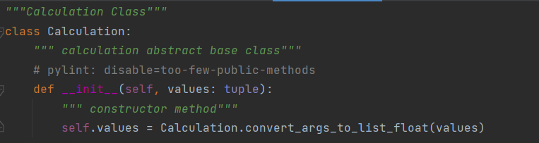
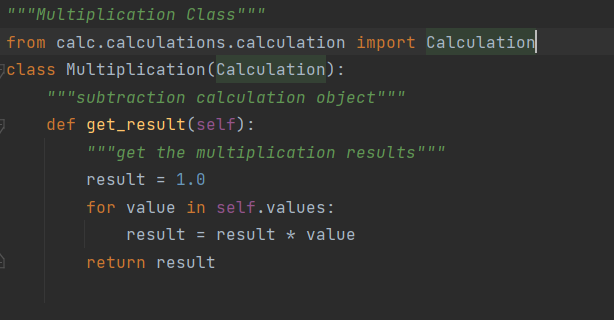
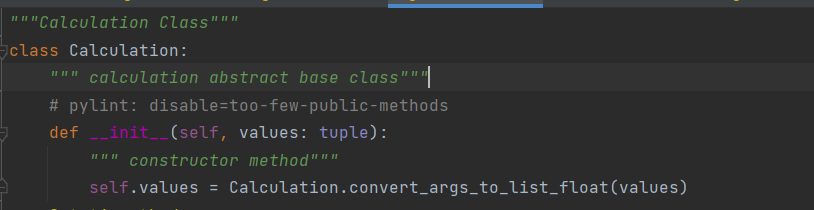
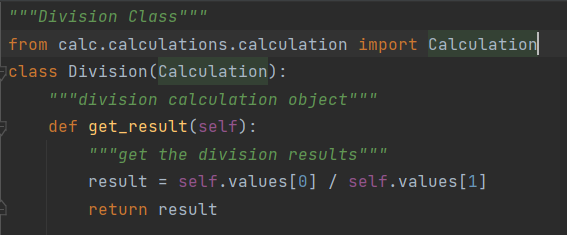
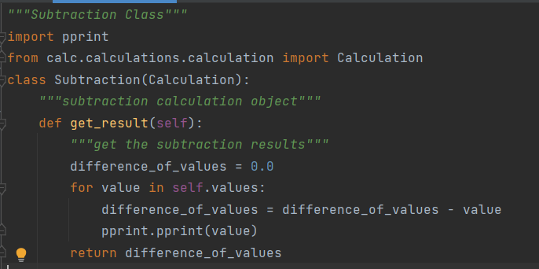

Encapsulation, Inheritance, Polymorphism, and Abstraction
Object Oriented programming (OOP) is a programming paradigm that relies on the concept of classes and objects. It is used to structure a software program into simple, reusable pieces of code blueprints (usually called classes), which are used to create individual instances of objects. There are many object-oriented programming languages including JavaScript, C++, Java, and Python.
Object-Oriented Programming (OOP) is a way of writing programs by using objects to represent data and functions. This type of programming with objects makes it easy to communicate with one another and exchange data. Developers can also easily reuse the code.
Abstraction, Encapsulation, Inheritance, Polymorphism are the four pillars of Object-Oriented Programming. We will go over a brief explanation of each in Python.
Abstraction is used to hide internal details and show only functionalities. Abstracting something means to give names to things, so that the name captures the basic idea of what a function or a whole program does.
An abstract class can be considered as a blueprint for other classes. It allows you to create a set of methods that must be created within any child classes built from the abstract class. A class which contains one or more abstract methods is called an abstract class. An abstract method is a method that has a declaration but does not have an implementation. While we are designing large functional units we use an abstract class. When we want to provide a common interface for different implementations of a component, we use an abstract class.
Here , calculation is abstract base class. It has implementation in another class
Here , calculation is abstracted in multiplication class.
When we annotate any method with an abstractmethod keyword, then it is an abstract method in Python (it won't have any method implementation). If the parent class has abstractmethod and not inherited from an abstract class, then it is optional to implement the abstractmethod .
Encapsulation is a process of protecting the data and functionality of a class in a single unit, called an object. This mechanism is often used to protect the data of an object from other objects. It's one of the fundamental principles in any programming language that supports object-oriented programming.
We can protect the variables in the class by marking them as private. We need to add two underscores as a prefix to make a variable private. Once we make a variable as private, we can't access them directly from the objects of that class. Now, let's see how to create private variables:
The calculation class initiates an object with the private variable "values" which is instantiated by the user. Although there are a few more steps within the program to create an object, this represents encapsulation because the "values" is stored within "self" which is the object.
Inheritance is a powerful feature in object-oriented programming. It is the process of creating a class that can derive or inherit the properties and methods from another class(parent/base).
We can represent real-world relationships easily with this feature. The reusability of the code will be simple. It has a powerful transitive nature meaning when class B inherited from class A, then the classes that inherited from class B will automatically be inherited from class A.
In this example calculation is Parent class. Division is the child class which is derived from parent class Calculation.
The benefits of inheritance are programs can create a generic parent class, and then create more specific child classes as needed. This simplifies overall programming, because instead of recreating the structure of the Division class multiple times, child classes automatically gain access to functionalities within their parent class.
The word polymorphism means having many forms. In programming, polymorphism means the same function name is used for different types. When we previously used inheritance, we explicitly linked parent classes to child classes to write reusable code. Polymorphism is achieving the same outcome of shared properties and methods but there is no link between the code; instead, we write the properties and methods to operate in similar and logical ways, allowing us to freely swap classes and methods and being able to expect a similar output.
In simple terms, polymorphism uses a single entity, like a method or object, to represent different behaviors.
In this example calculation is Parent class. Addition, Subtraction , Multiplication and Division are the child class which is derived from parent class Calculation. Polymorphism is the process of using an operator or function in different ways for different data input. Within the calculator program, we can see this happen with the "get_result" method of the multiple child classes, and its interaction with the calculation class.
All the children classes have the "get_result" function. They all return same thing. But operation are different like addition class adds two value together, subtraction class subtract two number, multiplication class multiply two numbers and division class divide two numbers. This is an example of polymorphism because both Addition ,Subtraction , Multiplication and Division come from the same parent class, and both have a similar functioning method with the same name that operates on the "self.values" from the parent class.
Student at New Jersey Institute of Technology (NJIT) pursuing MS in Computer Science (CS).
This Article basically demonstrates the principles of object oriented programming: Encapsulation, Inheritance, Polymorphism, and Abstraction
This article is the part of a Project towards credits for IS601 - Web Systems Development at New Jersey Institute of Technology